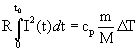
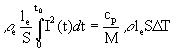
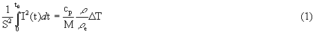
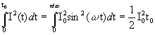
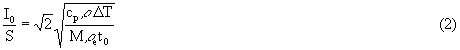
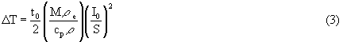
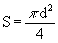
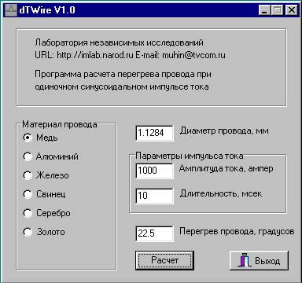

dTWire: Программа расчета перегрева провода при одиночном синусоидальном импульсе тока
1. Обозначения:
I(t) – величина тока в момент времени t
I0 – амплитуда импульса
тока
t0 – длительность импульса тока
DT – разность конечной и начальной температур
провода (перегрев)
cp – молярная изобарная теплоемкость материала провода
M – молярная масса материала провода
r – плотность материала провода
re – удельное электрическое сопротивление
материала провода
S – площадь поперечного сечения провода
d – диаметр провода
Расчеты производятся в системе СИ. Условия окружающей среды предполагаются нормальными, а свойства материала провода – не зависящими от температуры.
2. Теория
Если длительность импульса достаточно мала, то процесс нагрева провода можно считать адиабатическим (отсутствие охлаждения). Электрическая энергия импульса тока полностью превращается в тепло, идущее на нагрев провода. Для отрезка провода длиной le можно записать соотношение:

или

где m – масса отрезка провода, R – его электрическое сопротивление.
Тогда, сокращая длину отрезка провода le, получим:

Для одиночного синусоидального импульса тока (I(t) = I0sin(wt) при 0 < t < t0=p/w; I(t) = 0 при t > t0):


Отсюда перегрев провода DT при одиночном синусоидальном импульсе тока с амплитудой I0 и длительностью t0 независимо от длины провода равен:

Площадь поперечного сечения провода S может быть выражена через его диаметр d по формуле:

3. Справочные данные для некоторых металлов
Материал провода |
Молярная масса (M), |
Плотность (r), |
Удельное электрическое сопротивление (re), |
Молярная изобарная теплоемкость (cp), |
Mre/(cpr), |
Температура плавления, |
| медь | 0.06355 |
8960 |
1.55 ∙ 10-8 |
24.43 |
0.45 ∙ 10-14 |
1083 |
| алюминий | 0.02698 |
2689 |
2.50 ∙ 10-8 |
24.35 |
1.03 ∙ 10-14 |
660 |
| железо | 0.05585 |
7874 |
8.60 ∙ 10-8 |
≈25 |
2.44 ∙ 10-14 |
1538 |
| свинец | 0.20720 |
11336 |
19.2 ∙ 10-8 |
26.65 |
13.17 ∙ 10-14 |
327 |
| серебро | 0.10787 |
10500 |
1.49 ∙ 10-8 |
25.36 |
0.60 ∙ 10-14 |
960 |
| золото | 0.19697 |
19320 |
2.06 ∙ 10-8 |
25.40 |
0.83 ∙ 10-14 |
1063 |
Один синусоидальный импульс тока с амплитудой плотности тока, равной 1000 А/мм2 (диаметр провода d ≈ 1.1284 мм, амплитуда тока I0 = 1000 А), и длительностью t0 = 10 миллисекунд дает следующий перегрев для проводов из разных металлов:
Вывод: минимальный перегрев соответствует медному проводу, хотя удельное сопротивление меди больше, чем у серебра.
4. Программа dTWire: dTWire10.rar (~106 Кбайт)

Программа dTWire написана на языке Pascal в среде программирования Delphi и предназначена для работы под управлением операционной системы (ОС) Windows 3.1/95/98/XP (с другими ОС семейства Windows не проверялась). Входными данными являются: материал провода (медь, алюминий, железо, свинец, серебро, золото), диаметр провода d (в миллиметрах), амплитуда синусоидального импульса тока I0 (в амперах), длительность импульса t0 (в миллисекундах). В качестве разделителя целой и дробной частей числа по умолчанию используется точка, ее же необходимо установить в качестве разделителя для ОС (например, диаметр d=1.1284 мм) или, в противном случае, вводить в качестве разделителя запятую. Выходные данные: перегрев провода DT (в градусах). Файл dTWire10.rar следует распаковать в отдельную заранее созданную папку. Упаковка производилась с помощью WinRar 2.80. Результат распаковки: dTWire10.exe - исполняемый файл программы, dTWire10.doc - описание (Word 97).
Скопированные файлы могут быть проверены на отсутствие вирусного кода в режиме on-line [3].
Ссылки:
11.08.2004
07.10.2005
17.04.2006
22.06.2010
Альтернативные источники
энергии
Компьютеры и
Интернет
Магнитные поля
Механотронные системы
Перспективные
разработки
Электроника и
технология